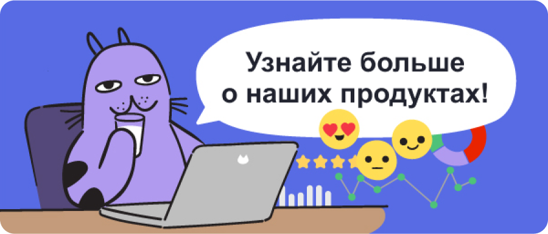

|  | ||||||||||||||||
Привет, это команда UX Feedback!Мы уже так давно вместе, а мы еще совсем ничего не рассказали о себе и о наших продуктах. UX Feedback ― платформа для работы с фидбеком. Мы используем методологию Voice of the Customer и закрываем полный цикл: мы не только собираем обратную связь, но обрабатываем и анализируем ее. Помимо самой платформы мы предоставляем нашу экспертизу: к каждому проекту подключается специалист Customer Success, который поможет подобрать опрос, сформулировать и настроить его, а также упростить все взаимодействие с платформой. У нас есть четыре основных модуля, которые можно подключить:
Это, конечно же, не все, что умеют наши продукты. Мы готовы подробнее рассказать про то, что мы делаем, как эффективно работать с нашей платформой, и какие результаты можно получить. |
||||||||||||||||
|
Если у вас есть вопросы по нашим продуктам или вы хотите пообщаться с нами лично, то переходите на наш сайт! Вы получили данное письмо, потому что предоставили свои контактные данные. Если вы получили это письмо по ошибке, вы можете отписаться от рассылки. Copyright © 2024 UX Feedback |
||||||||||||||||